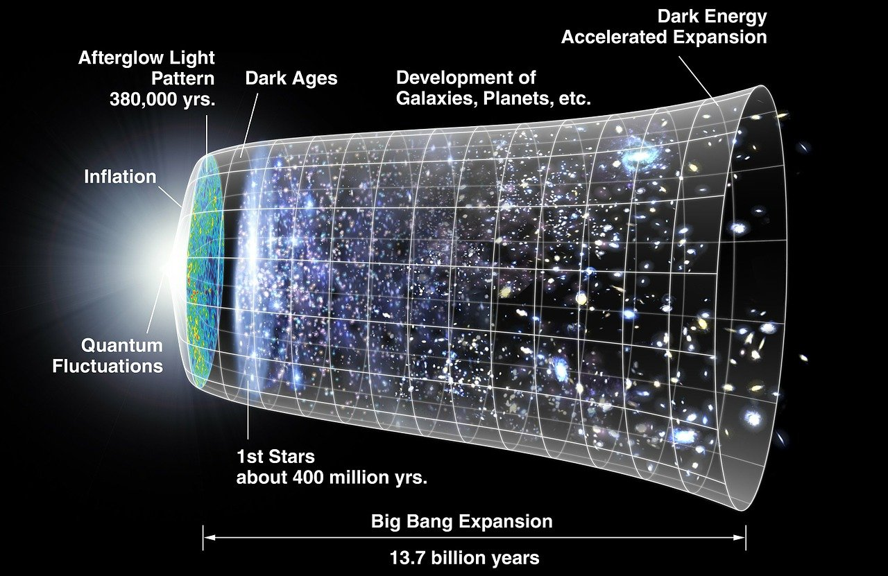

3.1 La théorie du Big Bang
Depuis le début du XXe siècle, une série de découvertes scientifiques majeures a profondément transformé notre compréhension de l’univers. Loin de l’idée d’un cosmos statique et éternel, les observations astronomiques — notamment celles d’Edwin Hubble sur le décalage vers le rouge des galaxies — ont révélé un univers en expansion. Cette dynamique cosmique a conduit à l’élaboration de la théorie du Big Bang, selon laquelle l’univers aurait émergé d’un état extrêmement dense et chaud il y a environ 13,8 milliards d’années. Cette théorie, aujourd’hui largement soutenue par des données observationnelles telles que le fond diffus cosmologique et l’abondance des éléments légers, n’a cependant pas toujours fait l’unanimité. D’autres modèles ont été proposés, comme l’univers stationnaire ou les scénarios cycliques, chacun tentant de répondre aux mêmes observations tout en évitant l’idée d’un commencement absolu. Pourtant, ces modèles alternatifs se heurtent à des limites théoriques et empiriques qui les rendent moins convaincants face à l’élégance et à la robustesse du modèle standard cosmologique.
Dans ce chapitre, nous examinerons en détail ces découvertes et les modèles qui en découlent, en mettant en lumière les forces et les limites de chacun, afin de mieux comprendre pourquoi le modèle du Big Bang s’est imposé comme le cadre dominant de la cosmologie moderne.
Les débuts de la théorie du Big Bang #
-
Albert Einstein et la relativité générale (1915) :
- En 1915, Albert Einstein publie la théorie de la relativité générale, une nouvelle manière de décrire la gravitation (non comme une force, mais comme une courbure de l’espace-temps par la masse et l’énergie). Ses équations suggèrent que l’univers est dynamique : il doit soit s’étendre, soit se contracter.
- Gêné par cette conclusion (il croyait que l’univers était statique), il introduisit la “constante cosmologique”, un facteur mathématique pour empêcher l’univers de s’effondrer ou de se dilater. Il qualifiera plus tard cette constante de « plus grande bévue », même si une forme de constante cosmologique (énergie noire) est aujourd’hui réintroduite pour expliquer l’accélération de l’expansion.
-
Alexander Friedmann et Georges Lemaître et l’idée d’un univers en expansion (années 1920)
- 1922–1924: le physicien russe Alexander Friedmann publie des solutions des équations d’Einstein montrant que l’Univers peut être en expansion ou en contraction. Il démontre mathématiquement qu’un Univers « statique » n’est pas la seule option.
- En 1927, le prêtre et physicien belge Georges Lemaître reprend ces solutions et les relie aux observations : il propose que l’Univers est en expansion et qu’il a commencé dans un état extrêmement dense et chaud, qu’il appelle plus tard « atome primitif ». Il établit la relation distance–décalage vers le rouge et en déduit une constante d’expansion.
- Nuance importante: Lemaître n’a pas utilisé un « taux de radiation » pour mesurer cette expansion ; il s’est appuyé sur les décalages spectraux des galaxies et sur des estimations de distance.
Leurs travaux théoriques constituent le socle conceptuel du modèle du Big Bang.
Les preuves observationnelles du Big Bang #
Plusieurs observations indépendantes confirment cette vision d’un Univers jadis beaucoup plus chaud et dense, en expansion depuis des milliards d’années.
-
Expansion de l’univers : la loi de Hubble–Lemaître montre que l’Univers se dilate.
- En 1929, Edwin Hubble observe que plus une galaxie est loin, plus sa lumière est décalée vers le rouge (relation v = H₀ d). Il combine des mesures de distance (céphéides, puis d’autres indicateurs) et de vitesse (raies spectrales).
- Que signifie ce décalage ? Les longueurs d’onde sont étirées parce que l’espace lui‑même s’étire. Ce n’est pas juste un “effet Doppler” classique dans un espace fixe.
-
Rayonnement fossile : le fond diffus cosmologique (CMB), vestige thermique de l’Univers jeune.
- Prédiction (1948) : Ralph Alpher et Robert Herman (avec George Gamow) prédisent l’existence d’un rayonnement d’environ quelques kelvins, libéré quand l’Univers est devenu transparent (~380 000 ans après le début).
- Découverte (1965) : Arno Penzias et Robert Wilson détectent un bruit micro‑onde isotrope à ≈ 2,7 K, exactement ce qui était prévu.
- Mesures précises : le satellite COBE (1989–1992) trouve un spectre de corps noir quasi parfait (2,725 K) et des anisotropies minuscules (~10⁻⁵). WMAP puis Planck dressent la “courbe” de ces fluctuations (pics acoustiques) et en déduisent avec précision l’âge de l’Univers, la quantité de matière, la courbure, etc.
- Pourquoi c’est crucial : ces petites variations de température sont les graines qui, sous l’action de la gravité, formeront les galaxies et les amas.
-
Abondance des éléments légers : la “recette” chimique de l’Univers tout jeune
- Quand ? De ~1 seconde à ~3 minutes après le Big Bang, la température dépasse 10⁹ K. Protons et neutrons fusionnent pour produire surtout de l’hélium-4 (≈ 24 – 25 % de la masse), ainsi qu’un peu de deutérium (quelques × 10⁻⁵), d’hélium-3 et de lithium-7.
- Ce qu’on observe. Dans des environnements très peu transformés — nuages de gaz quasi primordiaux et vieilles étoiles pauvres en métaux — les abondances mesurées concordent remarquablement avec les calculs de la nucléosynthèse primordiale. Reste une légère « tension du lithium » : la quantité de Li-7 observée est plus basse que la valeur théorique.
- Pourquoi c’est important. Ce mélange précis ne peut être obtenu que dans un Univers extrêmement chaud et dense durant un laps de temps très court. Un Univers éternel et stationnaire aurait laissé beaucoup plus de temps pour transformer l’hydrogène ; on n’y retrouverait pas ces proportions.
L’inflation cosmique : une hypothèse clé (mais encore à tester) #
Dans les années 1980, le physicien Alan Guth introduit le concept d’inflation cosmique. Il s’agit d’une phase d’expansion exponentielle, survenue vers 10⁻³⁶ à 10⁻³² seconde après le Big Bang, où l’univers a vu son volume croître d’un facteur gigantesque en une fraction de seconde.
Pourquoi proposer une telle idée ? Parce que le modèle classique du Big Bang seul ne pouvait expliquer plusieurs énigmes :
- Le problème de l’horizon : Sans inflation, les différentes régions de l’univers observables aujourd’hui n’auraient jamais pu être en contact. Pourtant, elles présentent des caractéristiques identiques, comme une température uniforme. L’inflation permet d’expliquer cette homogénéité : avant la phase d’expansion extrême, ces régions étaient suffisamment proches pour échanger informations et énergie.
- Le problème de la platitude : Les observations montrent que l’univers est quasiment plat, c’est-à-dire que son espace n’est ni courbé positivement (fermé) ni négativement (ouvert). Sans inflation, il aurait fallu des conditions initiales extraordinairement précises. L’inflation agit comme un mécanisme d’aplanissement, rendant l’univers plat à très grande échelle, même s’il ne l’était pas parfaitement au départ.
- Le problème des monopôles (et autres reliques exotiques) : Les théories de grande unification prévoient des monopôles magnétiques (aimants à pôle unique) créés juste après le Big Bang chaud. Sans inflation, leur densité aujourd’hui serait comparable à celle des protons : on devrait en détecter partout. Or aucun monopôle n’a jamais été observé malgré des recherches intensives. L’inflation, en dilatant l’Univers d’un facteur gigantesque, dilue ces particules à des concentrations si faibles qu’elles deviennent indétectables, résolvant ainsi la contradiction.
- L’origine des structures : L’inflation explique également pourquoi l’univers n’est pas parfaitement uniforme. Les fluctuations quantiques minuscules, présentes avant et pendant l’inflation, ont été étirées à des échelles cosmologiques. Ces variations minuscules de densité ont servi de germes à la formation des galaxies et des amas de galaxies.
L’inflation n’est pas encore confirmée de manière définitive, mais plusieurs de ses prédictions ont trouvé des indices dans les observations du fond diffus cosmologique, notamment dans le spectre des fluctuations de température.

Implication de la théorie du Big Bang #
En résumé, le modèle du Big Bang décrit un Univers qui naît d’un état extrêmement dense et chaud — peut-être même d’une singularité au sens de la relativité générale — puis qui se dilate rapidement, une phase d’inflation pouvant encore amplifier cette expansion initiale. À ces énergies, la relativité générale et la mécanique quantique ne constituent plus un cadre suffisant : la description de l’« instant zéro » reste donc spéculative, en attente d’une théorie de gravitation quantique.
Ce scénario s’impose parce qu’il explique un ensemble d’observations convergentes : l’expansion mesurée des galaxies, le fond diffus cosmologique et son spectre de corps noir, l’abondance des éléments légers issue de la nucléosynthèse primordiale, ainsi que la formation des structures à grande échelle.
La question d’un commencement absolu dépasse cependant le cadre de la physique et touche à la philosophie. Plusieurs savants et penseurs, quelles que soient leurs convictions, ont exprimé un malaise devant l’idée d’un début abrupt. Arthur Eddington notait par exemple : « D’un point de vue philosophique, l’idée d’un commencement abrupt à l’ordre actuel de la Nature me répugne. »
Pourquoi cette résistance ? Parce qu’admettre un commencement suggère, pour beaucoup, l’existence d’une cause première ou d’une force créatrice. La section 3.3 explorera plus en détail ce lien entre l’existence d’un début cosmique et la notion de causalité première.
Théories alternatives #
Différentes théories alternatives au Big Bang émergèrent pour rendre l’univers infini à nouveau.
Le modèle stationnaire de l’univers fut développée par le Britannique Fred Hoyle et ses collègues dans les années 1940. Cette théorie soutenait que l’univers était infini et éternel tout en admettant l’hypothèse d’un univers en accroissement perpétuel. Il avança l’idée que l’univers était infini à la fois dans sa dimension et dans le temps. Ainsi, aucune création ou causalité n’était nécessaire. D’après ce modèle, puisqu’il y a expansion (donc dilution de la matière), il devait donc y avoir une création continue de matière pour compenser la dilution due à l’expansion de l’Univers. Dans ce cas, il n’y a pas de phase primordiale dense et chaude. Ce cadre théorique a longtemps été un concurrent sérieux au modèle du Big Bang. Mais il est tombé en désuétude principalement à la suite de la découverte du fond diffus cosmologique, que le modèle stationnaire n’explique pas naturellement. POUR LA SCIENCE n° 521
D’autre modèles concurrents ont été proposés :
Univers cyclique (Big Bounce):
* Principe général: Le modèle du Rebond postule que notre univers aurait, dans un lointain passé, été beaucoup plus vaste qu'aujourd'hui. Cette forme antérieure de l'Univers se serait contractée, sur un temps très long, jusqu'à atteindre une taille extrêmement réduite, mais non nulle. Il aurait alors « rebondi » et aurait commencé son expansion jusqu'à atteindre sa taille actuelle. Le modèle de l'oscillation de l'univers a comme postulat de base que l'univers connaîtrait cette transformation un nombre de fois infini et que ce phénomène continuerait à se reproduire sans cesse. En d'autres mots, l'univers existerait pour l'éternité et s'accroîtrait et s'effondrerait à différents intervalles.
* Versions théoriques : on trouve des scénarios de rebond en gravitation quantique à boucles ou dans certaines approches de la théorie des cordes. Le volume minimal atteint est parfois estimé de l’ordre du volume de Planck (~4 × 10^-105 m³).
* État des observations : à ce jour, aucune signature observationnelle décisive ne vient confirmer ces modèles, même si certaines prédictions sont recherchées (spectres particuliers dans le CMB, distribution des structures, etc.).
* Sa popularité au sein de la communauté scientifique reste cependant pour l'heure bien inférieure à celle de l'inflation cosmique, car elle résout les mêmes problèmes (horizon, platitude) et colle mieux aux données actuelles.
Modèles quantiques « éternels » ou « émergents »:
* Principe général: Dans ces scénarios, l’Univers ne « naît » pas au sens strict d’un instant zéro. Il existe avant le Big Bang sous la forme d’un état quantique (vide quantique, état quasi stationnaire, phase euclidienne, etc.) et émerge ensuite comme Univers classique en expansion. Autrement dit, le Big Bang n’est pas une création ex nihilo, mais une transition de phase.
* Le vide quantique n’est pas le néant: En physique, le « vide » est un état d’énergie minimale, traversé de fluctuations quantiques qui peuvent créer et annihiler brièvement des paires de particules. On est donc loin du « rien » philosophique : ces modèles ne prétendent pas que l’Univers surgit du néant absolu.
* Variantes souvent citées :
- Univers émergent : l’Univers reste très longtemps dans un état quantique quasi stationnaire (pas de véritable “t = 0”), puis entre progressivement dans une phase d’expansion classique.
- Proposition « no‑boundary » (Hartle–Hawking) : il n’existe pas de « bord » temporel initial. Le temps classique apparaît à partir d’une phase quantique décrite par une fonction d’onde de l’Univers, évitant ainsi la singularité.
- Tunneling quantique (Vilenkin) : l’Univers effectue un effet tunnel depuis un état quantique (vide métastable) vers un Univers en expansion. Là encore, on ne parle pas d’un surgissement « à partir de rien », mais d’une transition quantique.
* Limites et statut observationnel: Ces approches restent hautement spéculatives. Elles proposent peu de prédictions distinctes faciles à tester : leurs signatures, si elles existent, se confondent souvent avec celles du modèle standard. À ce jour, aucune observation ne permet de trancher en faveur de l’un de ces scénarios.
En dépit de leur intérêt conceptuel (éternité de l’Univers, évitement d’une singularité, etc.), les modèles alternatifs peinent à reproduire simultanément l’ensemble des observations. Le modèle stationnaire est largement disqualifié par le fond diffus cosmologique ; les scénarios cycliques/rebond et les modèles quantiques « éternels » restent stimulants, mais leurs signatures distinctives n’ont pas été confirmées.
Les découvertes qui ont conduit aux hypothèses de matière noire froide (CDM) et d’énergie noire (Λ) #
Depuis la fin des années 1970, on s’est aperçu que le Big Bang « chaud et dense » ne suffit pas à décrire tout ce que l’on observe. Dans les galaxies, les étoiles des bords tournent trop vite au regard de la seule matière lumineuse ; dans les amas, la masse déduite des mouvements des galaxies, du gaz chaud en rayons X et des effets de lentille gravitationnelle dépasse largement la masse visible. À l’échelle cosmique, la carte très précise du fond diffus cosmologique montre qu’il manque une part de matière pour former les grandes structures telles qu’on les voit. La solution la plus simple est d’admettre une matière supplémentaire, invisible et presque immobile à ces époques : la matière noire froide. Elle n’émet pas de lumière (ou très peu), interagit surtout par la gravité et sert de charpente à la formation des filaments, des galaxies et des amas.
Vient ensuite la surprise de 1998 : des supernovae lointaines apparaissent plus faibles qu’attendu, signe que l’expansion de l’Univers accélère. Or les mesures du fond diffus cosmologique indiquent un Univers presque plat géométriquement ; pour concilier cette platitude avec une expansion qui accélère, il faut introduire une composante qui exerce une pression négative et pousse l’espace à s’étirer de plus en plus vite : l’énergie noire, modélisée le plus simplement par la constante cosmologique Λ. En combinant supernovae, oscillations acoustiques baryoniques (BAO) et CMB, on obtient un portrait cohérent : environ 5 % de baryons, ~25 % de matière noire froide et ~70 % d’énergie noire — c’est le modèle ΛCDM.
Y a-t-il des opposants à ces hypothèses ? Oui, il existe des propositions concurrentes. Pour remplacer la matière noire, certains modifient les lois de la gravitation (MOND et extensions comme TeVeS) : ces modèles expliquent bien certaines courbes de rotation de galaxies, mais peinent avec d’autres tests, notamment les amas de galaxies et les cartes du CMB. Du côté de l’énergie noire, d’autres préfèrent changer la gravité à grande échelle (par exemple des théories f(R) ou des scénarios de « back-reaction »), ou bien autoriser une énergie noire qui évolue dans le temps ; ces pistes sont étudiées, mais, à ce jour, elles ne surpassent pas l’explication simple par Λ quand on met toutes les données ensemble.
Enfin, des tensions subsistent — notamment sur la valeur actuelle du taux d’expansion (H₀) ou sur la croissance des structures (σ₈/S₈). Elles maintiennent ouvertes les questions et poussent à tester ΛCDM de façon toujours plus serrée. Pour l’instant, toutefois, la matière noire froide et l’énergie noire restent les deux ingrédients les plus efficaces pour rendre compte, simultanément, de la dynamique interne des systèmes, de la géométrie de l’Univers et de son histoire d’expansion.
Les dernières découvertes (après l’introduction de Λ et de la CDM) #
Après l’établissement du cadre ΛCDM, la cosmologie est entrée dans une ère de mesures de haute précision. Les cartes du fond diffus cosmologique, d’abord avec WMAP puis surtout avec Planck, ont affiné les paramètres clés (âge, contenu en matière et énergie, courbure quasi nulle) et confirmé la cohérence globale du modèle. Des expériences au sol comme ACT et SPT ont prolongé ce travail à plus petites échelles angulaires, offrant des vérifications indépendantes et des contraintes complémentaires.
En parallèle, les grands relevés de galaxies ont mis en évidence l’empreinte des oscillations acoustiques baryoniques, véritable règle standard pour reconstituer l’histoire de l’expansion. Combinées au cisaillement gravitationnel faible (KiDS, DES, HSC), ces cartographies 3D ont suivi la croissance des structures, testé la gravité à grande échelle et consolidé l’image d’un univers structuré par la matière noire froide. Plus récemment, le télescope James-Webb a révélé des galaxies très précoces et parfois plus massives ou lumineuses qu’attendu, ce qui pousse à raffiner les modèles de formation stellaire et d’assemblage des galaxies sans remettre en cause l’ossature du cadre standard.
Ces avancées n’effacent pas toutes les questions. La valeur du taux d’expansion actuel diffère selon qu’on la mesure localement (céphéides + supernovae, masers, lentilles fortes) ou qu’on l’infère du CMB sous ΛCDM ; de même, certains indicateurs de la croissance des structures suggèrent une légère tension. Ces écarts peuvent provenir d’effets systématiques encore mal contraints ou annoncer des ajustements de physique. Les prochains jeux de données — DESI déjà en cours, Euclid et, bientôt, le Rubin Observatory — devraient préciser l’ampleur de ces tensions et, selon le verdict, conforter le modèle ou guider son évolution.
Et maintenant? #
Le modèle cosmologique actuel n’est pas un bloc figé : il se construit à partir des données disponibles, prédit des phénomènes quantifiables, puis est testé par de nouvelles observations. Lorsque des résultats ne collent pas, on révise le modèle. Ce cycle — observer → modéliser → prédire → tester → réviser — est au coeur du progrès en cosmologie.
- Observer → Modéliser. Les premières mesures de l’expansion ont conduit à un Univers en évolution ; la physique du plasma primordial a suggéré un état chaud et dense.
- Modéliser → Prédire. Avant 1965, on prévoit un rayonnement fossile micro-onde : il sera détecté par Penzias & Wilson. Dans les années 1980, on introduit l’inflation pour résoudre horizon/platitude : elle prévoit des fluctuations presque invariantes d’échelle, adiabatiques et (quasi) gaussiennes, confirmées ensuite par WMAP/Planck.
En 1998, les SN Ia révèlent une accélération : on ajoute Λ (énergie noire) ; BAO, CMB et lentilles convergent vers un même ensemble de paramètres. - Tester → Réviser. Aujourd’hui, des tensions (H₀, σ₈/S₈) et des surprises (galaxies très précoces avec JWST) poussent soit à affiner l’astrophysique et les analyses, soit à étendre le cadre standard si nécessaire. La connaissance évolue : le modèle s’ajuste à la lumière des meilleures données.
À retenir : ΛCDM est un outil prédictif qui a passé de nombreux tests (expansion, CMB, BAO, éléments légers, structures), mais il reste révisable. C’est précisément parce qu’il fait des prédictions précises qu’il peut être confirmé… ou mis en défaut* — et donc amélioré.
Tout modèle repose sur des hypothèses. Pour savoir jusqu’où ΛCDM reste valable et où il doit être ajusté, il faut les expliciter et les tester.
Hypothèses sous-jacentes #
Jean-Philippe Uzan dans POUR LA SCIENCE n° 521 s’est penché sur les hypothèses utilisées par les cosmologistes pour bâtir le modèle du Big Bang. En effet, tout modèle, comme celui du Big Bang, repose sur un ensemble d’hypothèses qu’il est nécessaire de questionner de façon constante. Alors que la précision des mesures augmente, ces hypothèses, et donc le modèle lui-même, sont-elles toujours adaptées pour interpréter les observations ? Faut-il en abandonner certaines, les modifier? Rappelons que tout modèle est un outil de travail, un consensus temporaire, nécessairement limité et ouvert à l’évolution. Avec du recul, on en distingue quatre majeures, que l’on notera H1, H2, H3 et H4:
- H1: la gravitation est bien décrite par la théorie de la relativité générale.
- Cela implique que l’Univers est représenté mathématiquement par un espace-temps dont la géométrie est déterminée à partir des équations d’Einstein.
- H2: la matière et ses interactions non gravitationnelles (électromagnétique, nucléaires forte et faible) sont décrites par le modèle standard de la physique des particules, qui repose sur la physique quantique.
- H3: l’Univers est homogène et isotrope à grande échelle.
- Selon ce principe, nous n’occupons pas une place particulière dans le cosmos (principe copernicien), et l’Univers que nous observons est alors représentatif de l’Univers dans sa globalité
- H3 définit la géométrie locale de l’Univers.
- Mathématiquement, H3 implique que la distribution spatiale de la matière est homogène, que l’expansion de l’espace est la même dans toutes les directions et en tout point, mais qu’elle peut changer dans le temps.
- H4: l’Univers n’a pas de structure complexe
- il n’existe pas de structure « exotique » ou d’inhomogénéité/an-isotropie majeure à très grande échelle au-delà de celles déjà observées.
Ces hypothèses ne sont pas des vérités absolues : elles doivent être testées en permanence à la lumière des nouvelles observations. Comme tout modèle scientifique, celui du Big Bang est appelé à évoluer. Pour l’instant, il reste le cadre théorique le plus cohérent et le plus prédictif pour expliquer l’univers tel que nous l’observons, même s’il présente certaines limites et tensions internes (comme celles liées à la constante de Hubble ou à la nature de l’énergie noire).
Conclusions #
Les deux principales caractéristiques de l’univers observable sont que celui-ci est homogène et isotrope à grande échelle, et qu’il est en expansion. Le but de la cosmologie est donc de proposer un modèle décrivant un tel univers, et expliquant les structures qui s’y sont formées. A l’heure actuelle, le modèle du Big Bang est le meilleur moyen d’ordonner rationnellement toutes les connaissances que nous avons amassées sur l’univers et son histoire, et il est confirmé par les plus récentes observations. Le philosophe athée, Anthony Flew, fit un commentaire à ce sujet (dans son livre There Is a God: How the World’s Most Notorious Atheist Changed His Mind):
“It is now widely accepted that the universe had a beginning. This is something that seems to support the claim that the universe was brought into existence by a creative intelligence. As a philosopher, I find this conclusion deeply troubling. For a long time, it was convenient to assume that the universe had always existed. But the Big Bang theory has changed that. It now seems that the cosmologists are proving what Saint Thomas tried to prove philosophically—that the universe had a beginning.”
Traduit en français :
“Il est désormais largement admis que l’univers a eu un commencement. Cela semble appuyer l’idée selon laquelle l’univers aurait été créé par une intelligence créatrice. En tant que philosophe, je trouve cette conclusion profondément troublante. Pendant longtemps, il était commode de supposer que l’univers avait toujours existé. Mais la théorie du Big Bang a changé cela. Il semble désormais que les cosmologistes prouvent ce que saint Thomas s’efforçait de démontrer philosophiquement : que l’univers a eu un commencement.”